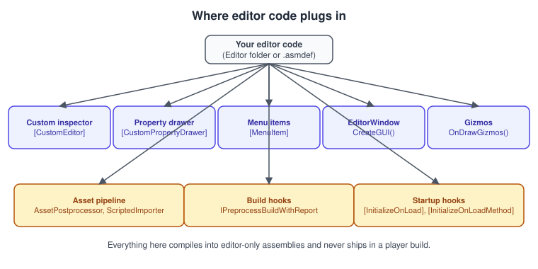
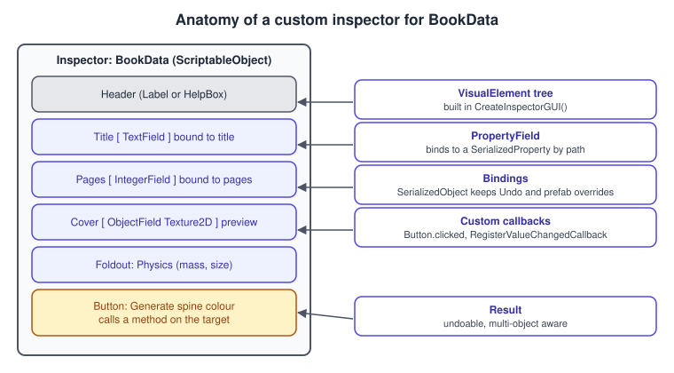
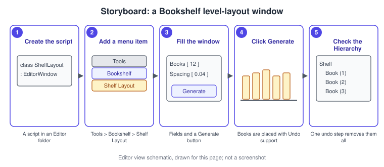

Editor Scripting and Tooling
|
This content was generated with the assistance of AI and should be verified against the official documentation before being relied on in production. |
The Unity Editor is itself a C# program, and it is built to be extended. A few dozen lines of editor code can replace a tedious manual routine: laying out forty books on a shelf, checking that every cover texture is imported with the same settings, drawing the grid a level designer snaps to. Tooling like this pays for itself on any project with more than one person, because it turns "remember to…" into something the Editor does.
The facts were checked in November 2026. The page documents Unity 6.3 LTS (6000.3), where UI Toolkit is the recommended
way to build editor interfaces (the older IMGUI APIs such as EditorGUILayout remain supported). Editor scripting works
on Windows, macOS and Linux Editors. It is part of the Bookshelf running example: a shelf-layout component with a
custom inspector, a Tools > Bookshelf window and a gizmo grid, which also serves as the small level editor
described by the spatial partition and level editor chapter of Game Development Patterns with Unity 2021. The runtime
side of the same ideas, ScriptableObject data and prefabs, is in
ScriptableObjects and Data-Driven Design and
Prefabs and Scenes; the C# attributes that make most of this
work ([CustomEditor], [MenuItem]) are explained in
Attributes and Reflection.
Where editor code goes
Editor code uses the UnityEditor namespace, which exists only inside the Editor. A player build does not contain it,
so a runtime script that references UnityEditor fails to build. Two mechanisms keep editor code out of builds:
-
Editor assemblies. Put editor scripts in a folder named
Editor(any depth), or, better, in their own assembly definition whose platform list contains only Editor. An editor assembly references the runtime assembly (for exampleBookshelf.Runtime) and not the other way round. -
Conditional compilation. Wrap small editor-only blocks in a runtime script with
#if UNITY_EDITORand#endif. Use this sparingly; a separate editor assembly is cleaner.
Source: Unity manual: Extend the Editor

The Bookshelf project’s layout for this page is:
Assets/
Scripts/
Runtime/
Bookshelf.Runtime.asmdef (includes all platforms)
ShelfLayout.cs
BookSize.cs
Editor/
Bookshelf.Editor.asmdef (Include Platforms: Editor only; references Bookshelf.Runtime)
ShelfBuilder.cs
ShelfLayoutEditor.cs
BookSizeDrawer.cs
ShelfLayoutWindow.cs
BookCoverPostprocessor.cs
BuildChecks.csSource: Unity manual: Extend the Editor
The runtime component the tools work on
The tools need something to edit. ShelfLayout describes a grid of book slots on a shelf, and doubles as the simple
spatial partition of the book area: it can turn a world position into a cell and a cell into a position. BookSize
is a small serializable struct that a property drawer will present.
using System;
using UnityEngine;
namespace Bookshelf
{
/// <summary>Width, height and thickness of a book in metres.</summary>
[Serializable]
public struct BookSize
{
public float width;
public float height;
public float thickness;
public BookSize(float width, float height, float thickness)
{
this.width = width;
this.height = height;
this.thickness = thickness;
}
public float Volume => width * height * thickness;
}
/// <summary>A grid of book slots on a shelf, laid out in the local space of this object.</summary>
[DisallowMultipleComponent]
public sealed class ShelfLayout : MonoBehaviour
{
[SerializeField] private GameObject bookPrefab;
[SerializeField, Min(1)] private int columns = 12;
[SerializeField, Min(1)] private int rows = 3;
[SerializeField] private Vector2 cellSize = new Vector2(0.05f, 0.4f);
[SerializeField] private BookSize bookSize = new BookSize(0.04f, 0.3f, 0.2f);
public GameObject BookPrefab => bookPrefab;
public int Columns => columns;
public int Rows => rows;
public Vector2 CellSize => cellSize;
public BookSize BookSize => bookSize;
/// <summary>Centre of a cell in local space (cell 0,0 is bottom left).</summary>
public Vector3 CellCenter(int column, int row)
{
return new Vector3((column + 0.5f) * cellSize.x, (row + 0.5f) * cellSize.y, 0f);
}
/// <summary>Maps a world position to a cell index; returns false outside the grid.</summary>
public bool TryGetCell(Vector3 worldPosition, out int column, out int row)
{
Vector3 local = transform.InverseTransformPoint(worldPosition);
column = Mathf.FloorToInt(local.x / cellSize.x);
row = Mathf.FloorToInt(local.y / cellSize.y);
return column >= 0 && column < columns && row >= 0 && row < rows;
}
// The grid is drawn in the Scene view even when nothing is selected.
private void OnDrawGizmos()
{
Gizmos.matrix = transform.localToWorldMatrix;
Gizmos.color = new Color(0.31f, 0.27f, 0.9f, 0.35f);
for (int r = 0; r < rows; r++)
{
for (int c = 0; c < columns; c++)
{
Gizmos.DrawWireCube(CellCenter(c, r), new Vector3(cellSize.x, cellSize.y, bookSize.thickness));
}
}
}
// Extra detail only while the object is selected.
private void OnDrawGizmosSelected()
{
Gizmos.matrix = transform.localToWorldMatrix;
Gizmos.color = new Color(0.9f, 0.55f, 0.1f, 1f);
Gizmos.DrawWireCube(
new Vector3(columns * cellSize.x * 0.5f, rows * cellSize.y * 0.5f, 0f),
new Vector3(columns * cellSize.x, rows * cellSize.y, bookSize.thickness));
}
}
}OnDrawGizmos runs in the Editor for every object with the component, selected or not; OnDrawGizmosSelected only for
the selected one. Gizmo drawing is Editor-only, but the methods live in the runtime class, which is the usual,
accepted exception to "no editor code in runtime scripts" because the Gizmos class is part of UnityEngine and the
methods are not called in a player. For anything interactive in the Scene view (a draggable handle) use the Handles class from
UnityEditor in a custom editor.
Source: Unity manual: Gizmos and handles
Custom inspectors
An inspector is the panel that shows a component’s fields. By default Unity builds it from the serialized fields. A
custom inspector replaces it for one component type: [CustomEditor(typeof(Foo))] on a class that derives from
Editor. With UI Toolkit you override CreateInspectorGUI() and return the root VisualElement of your interface.
Returning the tree is enough to bind it: Unity binds the elements to the target’s serialized data after the method
returns, so a PropertyField or an element with a binding-path edits the real field, with Undo, multi-object editing
and prefab override marks for free.
-
Create the editor assembly: in the
Assets/Scripts/Editorfolder choose Create > Scripting > Assembly Definition, name itBookshelf.Editor, set Include Platforms to Editor only and addBookshelf.Runtimeto Assembly Definition References. -
In that folder create a script
ShelfLayoutEditorwhose class derives fromEditorand carries[CustomEditor(typeof(ShelfLayout))]. -
Override
CreateInspectorGUI(). Create a rootVisualElement, add aPropertyFieldfor each serialized property (byserializedObject.FindProperty), add aButtonfor each action, and return the root. -
Select a GameObject with a
ShelfLayoutin the Hierarchy. The Inspector shows your interface. Edit a field and press Ctrl+Z (Cmd+Z on macOS) to check that Undo works.

The fill and clear actions are shared by the inspector, the window and the menu items, so they live in one static
helper in the editor assembly. It uses Undo so that one Ctrl+Z removes a whole generated shelf, and
PrefabUtility.InstantiatePrefab so that the books stay linked to the Book prefab (a plain Instantiate would make
unlinked copies).
using UnityEditor;
using UnityEngine;
namespace Bookshelf.Editor
{
/// <summary>Editor-only logic for filling and clearing a shelf, shared by every tool.</summary>
public static class ShelfBuilder
{
public static int Fill(ShelfLayout layout)
{
if (layout == null || layout.BookPrefab == null)
{
Debug.LogWarning("Assign a book prefab to the ShelfLayout first.");
return 0;
}
Undo.IncrementCurrentGroup();
int group = Undo.GetCurrentGroup();
Undo.SetCurrentGroupName("Fill shelf with books");
int created = 0;
for (int row = 0; row < layout.Rows; row++)
{
for (int column = 0; column < layout.Columns; column++)
{
GameObject book = (GameObject)PrefabUtility.InstantiatePrefab(
layout.BookPrefab, layout.transform);
book.name = "Book " + (row * layout.Columns + column + 1);
book.transform.localPosition = layout.CellCenter(column, row);
Undo.RegisterCreatedObjectUndo(book, "Create book");
created++;
}
}
Undo.CollapseUndoOperations(group); // one Ctrl+Z undoes the whole shelf
return created;
}
public static void Clear(ShelfLayout layout)
{
if (layout == null)
{
return;
}
Undo.IncrementCurrentGroup();
int group = Undo.GetCurrentGroup();
Undo.SetCurrentGroupName("Clear shelf");
Transform root = layout.transform;
for (int i = root.childCount - 1; i >= 0; i--)
{
Undo.DestroyObjectImmediate(root.GetChild(i).gameObject);
}
Undo.CollapseUndoOperations(group);
}
}
}Source: Scripting API: Undo.RegisterCreatedObjectUndo and Scripting API: PrefabUtility.InstantiatePrefab
The inspector itself, with UI Toolkit:
using UnityEditor;
using UnityEditor.UIElements;
using UnityEngine;
using UnityEngine.UIElements;
namespace Bookshelf.Editor
{
[CustomEditor(typeof(ShelfLayout))]
public sealed class ShelfLayoutEditor : UnityEditor.Editor
{
public override VisualElement CreateInspectorGUI()
{
VisualElement root = new VisualElement();
root.Add(new Label("Shelf layout") { style = { unityFontStyleAndWeight = FontStyle.Bold } });
root.Add(new PropertyField(serializedObject.FindProperty("bookPrefab")));
root.Add(new PropertyField(serializedObject.FindProperty("columns")));
root.Add(new PropertyField(serializedObject.FindProperty("rows")));
root.Add(new PropertyField(serializedObject.FindProperty("cellSize")));
root.Add(new PropertyField(serializedObject.FindProperty("bookSize")));
Label status = new Label();
status.style.marginTop = 6;
root.Add(status);
VisualElement buttons = new VisualElement();
buttons.style.flexDirection = FlexDirection.Row;
buttons.style.marginTop = 6;
Button fill = new Button(() =>
{
ShelfLayout layout = (ShelfLayout)target;
int count = ShelfBuilder.Fill(layout);
status.text = count + " books created";
})
{ text = "Fill with books" };
Button clear = new Button(() =>
{
ShelfBuilder.Clear((ShelfLayout)target);
status.text = "Shelf cleared";
})
{ text = "Clear" };
fill.style.flexGrow = 1;
clear.style.flexGrow = 1;
buttons.Add(fill);
buttons.Add(clear);
root.Add(buttons);
return root;
}
}
}The older route is OnInspectorGUI() with EditorGUILayout and serializedObject.Update() and
serializedObject.ApplyModifiedProperties() around the fields. It is still supported and is what most tutorials and
older books show; the UI Toolkit version above has the advantage of USS styling, UXML layouts made in the UI Builder,
and the same element library as runtime UI (see
UI Toolkit). To reuse the default inspector and only add to it, put an
InspectorElement.FillDefaultInspector call in CreateInspectorGUI, or create a PropertyField per property as
above.
Property drawers
A custom inspector replaces the panel for one component. A property drawer changes how one type looks wherever it
appears: in any component, in a list, in a ScriptableObject. It derives from PropertyDrawer and carries
[CustomPropertyDrawer(typeof(BookSize))]. Property drawers work for any [Serializable] class or struct, and for
custom attributes.
using UnityEditor;
using UnityEditor.UIElements;
using UnityEngine;
using UnityEngine.UIElements;
namespace Bookshelf.Editor
{
[CustomPropertyDrawer(typeof(BookSize))]
public sealed class BookSizeDrawer : PropertyDrawer
{
public override VisualElement CreatePropertyGUI(SerializedProperty property)
{
Foldout foldout = new Foldout { text = property.displayName, value = true };
VisualElement row = new VisualElement();
row.style.flexDirection = FlexDirection.Row;
string[] names = { "width", "height", "thickness" };
foreach (string name in names)
{
PropertyField field = new PropertyField(property.FindPropertyRelative(name), name);
field.style.flexGrow = 1;
field.style.minWidth = 70;
row.Add(field);
}
foldout.Add(row);
return foldout;
}
}
}Source: Scripting API: PropertyDrawer
Menu items and shortcuts
[MenuItem("Path/Item")] on a static method adds a command to the Editor’s menu bar. A second method with the same
path and true as the second argument is its validation function and enables or disables the item. Items under
GameObject/ appear in the Hierarchy’s context menu too, and Assets/ items appear in the Project window. A shortcut
is added to the path string (% is Ctrl or Cmd, # is Shift, & is Alt, then a key), and [ContextMenu] adds a
command to a component’s own context menu.
using UnityEditor;
using UnityEngine;
namespace Bookshelf.Editor
{
public static class ShelfMenu
{
private const string FillPath = "Tools/Bookshelf/Fill Selected Shelf";
[MenuItem(FillPath, false, 100)]
private static void FillSelected()
{
ShelfLayout layout = Selection.activeGameObject.GetComponent<ShelfLayout>();
int count = ShelfBuilder.Fill(layout);
Debug.Log("Created " + count + " books on " + layout.name);
}
// Validation: the item is greyed out unless a shelf is selected.
[MenuItem(FillPath, true)]
private static bool CanFillSelected()
{
return Selection.activeGameObject != null
&& Selection.activeGameObject.GetComponent<ShelfLayout>() != null;
}
[MenuItem("GameObject/Bookshelf/Shelf", false, 10)]
private static void CreateShelf(MenuCommand command)
{
GameObject shelf = new GameObject("Shelf", typeof(ShelfLayout));
GameObjectUtility.SetParentAndAlign(shelf, command.context as GameObject);
Undo.RegisterCreatedObjectUndo(shelf, "Create shelf");
Selection.activeGameObject = shelf;
}
}
}Source: Scripting API: MenuItem
Editor windows
An EditorWindow is a dockable panel like the Hierarchy or the Console. Use one when a tool needs its own space or
works across several objects. With UI Toolkit, override CreateGUI() and add elements to rootVisualElement; open the
window with EditorWindow.GetWindow<T>() from a menu item.
-
Create a script
ShelfLayoutWindowin the editor folder, deriving fromEditorWindow. -
Add a static method with
[MenuItem("Tools/Bookshelf/Shelf Layout")]that callsGetWindow<ShelfLayoutWindow>and sets the window title. -
Override
CreateGUI(): add anObjectFieldfor the targetShelfLayout, twoIntegerFieldcontrols for rows and columns, and a Generate button. -
Open Tools > Bookshelf > Shelf Layout, drag a shelf from the Hierarchy into the object field and press Generate.
-
Check the Hierarchy: the books are children of the shelf, and one Undo removes them all.

using UnityEditor;
using UnityEditor.UIElements;
using UnityEngine;
using UnityEngine.UIElements;
namespace Bookshelf.Editor
{
public sealed class ShelfLayoutWindow : EditorWindow
{
private ObjectField targetField;
private Label status;
[MenuItem("Tools/Bookshelf/Shelf Layout")]
public static void Open()
{
ShelfLayoutWindow window = GetWindow<ShelfLayoutWindow>();
window.titleContent = new GUIContent("Shelf Layout");
window.minSize = new Vector2(280, 160);
}
public void CreateGUI()
{
VisualElement root = rootVisualElement;
root.style.paddingLeft = 8;
root.style.paddingRight = 8;
root.style.paddingTop = 8;
targetField = new ObjectField("Shelf")
{
objectType = typeof(ShelfLayout),
allowSceneObjects = true
};
root.Add(targetField);
Button fill = new Button(OnFill) { text = "Generate" };
fill.style.marginTop = 8;
root.Add(fill);
Button clear = new Button(OnClear) { text = "Clear" };
clear.style.marginTop = 4;
root.Add(clear);
status = new Label("Pick a shelf and press Generate.");
status.style.marginTop = 8;
root.Add(status);
// Follow the Hierarchy selection when the user selects a shelf.
Selection.selectionChanged += OnSelectionChanged;
OnSelectionChanged();
}
private void OnDestroy()
{
Selection.selectionChanged -= OnSelectionChanged;
}
private void OnSelectionChanged()
{
if (Selection.activeGameObject != null
&& Selection.activeGameObject.TryGetComponent(out ShelfLayout layout))
{
targetField.value = layout;
}
}
private void OnFill()
{
ShelfLayout layout = targetField.value as ShelfLayout;
status.text = layout == null ? "No shelf selected." : ShelfBuilder.Fill(layout) + " books created";
}
private void OnClear()
{
ShelfLayout layout = targetField.value as ShelfLayout;
if (layout != null)
{
ShelfBuilder.Clear(layout);
status.text = "Shelf cleared";
}
}
}
}An editor window is also the right shape for a level editor: a tool that lets a designer place and snap objects on a
grid. The ShelfLayout.TryGetCell method above is the building block; with SceneView.duringSceneGui a tool can
raycast the mouse into the Scene view, ask the layout for the cell under the cursor and place or remove a book there,
all with Undo. The grid is the spatial partition: finding what is in a cell is a dictionary lookup instead of a scan
of every book.
Source: Scripting API: SceneView
The Undo system and dirty state
Every change a tool makes to a scene object should go through Undo, or the user cannot revert it and the Editor may not notice that the scene changed:
-
Undo.RecordObject(obj, "name")before changing a field, so the old value is stored. -
Undo.RegisterCreatedObjectUndoafter creating an object;Undo.DestroyObjectImmediateto delete one. -
Undo.SetCurrentGroupNameandUndo.CollapseUndoOperationsto fold several steps into one entry, asShelfBuilderdoes. -
For assets (ScriptableObjects, importer settings) call
EditorUtility.SetDirty(asset)after changing them, thenAssetDatabase.SaveAssets(); changes made through aSerializedObjectuseApplyModifiedProperties()and are marked for you.
The asset pipeline: postprocessors
An AssetPostprocessor hooks into the import of assets. OnPreprocessTexture runs before a texture is imported and can
change its TextureImporter settings, so every cover texture in a folder is imported the same way without anyone
remembering to tick boxes. OnPostprocessTexture, OnPreprocessModel, OnPostprocessModel and
OnPostprocessAllAssets cover the other stages. A ScriptedImporter goes further and defines a new asset type from a
file extension.
using UnityEditor;
using UnityEngine;
namespace Bookshelf.Editor
{
/// <summary>Imports every texture under Assets/Art/BookCovers with the same settings.</summary>
public sealed class BookCoverPostprocessor : AssetPostprocessor
{
private const string CoverFolder = "Assets/Art/BookCovers/";
private void OnPreprocessTexture()
{
if (!assetPath.StartsWith(CoverFolder))
{
return;
}
TextureImporter importer = (TextureImporter)assetImporter;
importer.textureType = TextureImporterType.Default;
importer.sRGBTexture = true; // covers are colour data
importer.mipmapEnabled = true;
importer.maxTextureSize = 1024;
importer.textureCompression = TextureImporterCompression.Compressed;
}
}
}Importer settings changed by a postprocessor are applied on import, so after adding a postprocessor, Reimport the folder (right-click > Reimport). Postprocessors are deterministic and should depend only on the asset and the project: a postprocessor that reads the clock or the user name makes the Library differ between machines.
Build and startup hooks
IPreprocessBuildWithReport runs just before a player build and can stop it by throwing
BuildFailedException. It is the place for checks the team would otherwise forget: every book has a cover, no test
scene is in the build list.
using System.Linq;
using UnityEditor;
using UnityEditor.Build;
using UnityEditor.Build.Reporting;
using UnityEngine;
namespace Bookshelf.Editor
{
public sealed class BuildChecks : IPreprocessBuildWithReport
{
public int callbackOrder => 0;
public void OnPreprocessBuild(BuildReport report)
{
string[] testScenes = EditorBuildSettings.scenes
.Where(s => s.enabled && s.path.Contains("/Tests/"))
.Select(s => s.path)
.ToArray();
if (testScenes.Length > 0)
{
throw new BuildFailedException("Test scenes are enabled in the build: " + string.Join(", ", testScenes));
}
Debug.Log("Pre-build checks passed for " + report.summary.platform);
}
}
/// <summary>Runs once when the Editor starts or scripts reload.</summary>
internal static class StartupHooks
{
[InitializeOnLoadMethod]
private static void OnEditorLoaded()
{
EditorApplication.playModeStateChanged += state =>
{
if (state == PlayModeStateChange.ExitingEditMode)
{
AssetDatabase.SaveAssets(); // never enter Play mode with unsaved ScriptableObject changes
}
};
}
}
}Startup hooks ([InitializeOnLoad] on a class, [InitializeOnLoadMethod] on a static method) run every time scripts
compile and reload, so they must be cheap and idempotent: an event subscription added on each reload without being
removed leaks handlers.
The same build code can run from a batch-mode CI job; see
Testing and CI for -executeMethod, and
Build Profiles and Platforms for profiles.
Packaging tools as a package
When the same tool is used in several projects, move it out of Assets into a package: a folder with a package.json
manifest that the Package Manager can install from disk, from a Git URL, from a registry or from a tarball. A package
has a conventional layout: a Runtime folder and an Editor folder each with its own assembly definition, a Tests
folder, optional Samples~ and Documentation~ folders (the trailing tilde makes Unity ignore the folder on import),
and the files README.md, CHANGELOG.md and LICENSE.md.
{
"name": "com.example.bookshelf-tools",
"version": "0.1.0",
"displayName": "Bookshelf Tools",
"description": "Shelf layout inspector, window and import checks for the Bookshelf project.",
"unity": "6000.3",
"documentationUrl": "https://example.com/bookshelf-tools/docs",
"keywords": [ "bookshelf", "editor", "tools" ],
"dependencies": {
"com.unity.ugui": "2.0.0"
}
}-
Open Window > Package Manager.
-
Open the + menu and choose Install package from disk.
-
Select the
package.jsonof your package folder. The package appears with the Local label, and the project’sPackages/manifest.jsonrecords afile:reference. -
Edit a script in the package; Unity recompiles it like any project script.
Packages and their dependencies are covered further in Asset Store and Packages.
Package signatures
Starting with Unity 6.3 the Package Manager checks digital signatures on tarball packages. A signature shows where a package came from and that it has not changed since its author created it. The Package Manager labels each package: a signed package from official Unity channels or your own organization is trusted, a package signed by a public channel or an organization you do not belong to is shown as limited (use it only if you are sure of the source), a package with an invalid signature is flagged as an error (possible tampering), and an unsigned package shows a warning. A publisher signs a package on export; the manual describes signing in the Package Manager window, with Editor command-line arguments and with the scripting API. The manual notes a known issue: Unity 6.3 builds earlier than 6000.3.5f2 could report valid signed packages as invalid, so update to that patch release or later.
Common mistakes
-
UnityEditorin a runtime script. The player build fails with missing namespace errors. Move the code into an editor assembly, or wrap it in#if UNITY_EDITOR. -
An editor folder that is not Editor-only. Putting
ShelfLayoutEditorin an assembly whose platform list is "Any Platform" fails the build; use Include Platforms: Editor. -
Instantiateinstead ofPrefabUtility.InstantiatePrefabin a tool. The created objects are no longer prefab instances, so later changes to the prefab do not reach them. -
Changing a component without Undo. The change cannot be reverted, and the scene may not be saved. Call
Undo.RecordObjectfirst, or go through aSerializedObjectandApplyModifiedProperties. -
Forgetting to mark assets dirty. A ScriptableObject changed from code and not marked with
EditorUtility.SetDirtyis not written to disk, and the change is lost when the Editor closes. -
Heavy work in
OnGUI,CreateInspectorGUIorOnDrawGizmos. They run constantly.OnDrawGizmosruns on every repaint for every object that has it; keep it cheap and draw only what helps. -
Leaking event handlers. Subscribing in
CreateGUIor an[InitializeOnLoad]class without unsubscribing inOnDestroyorOnDisableadds a handler for each domain reload or window open. -
Relying on
SelectionorAssetDatabasein Play mode builds. They are Editor-only and do not exist in a player. -
Editing the model asset instead of a variant. A postprocessor that rewrites model settings for every model in the project surprises artists; limit it by folder or by label.
Performance notes
-
Editor tools run in the Editor’s main thread: a slow tool freezes the Editor. Show a progress bar with
EditorUtility.DisplayProgressBarfor long operations and avoidAssetDatabase.Refreshin loops; batch changes betweenAssetDatabase.StartAssetEditingandStopAssetEditing. -
A
FindAssets("t:BookData")over a big project takes time; cache the result, or run it on demand, not on every inspector repaint. -
Keep editor assemblies small and separate from runtime ones so that a change to a tool does not recompile gameplay code, and the reverse.
-
In Unity 6.6 new projects use "Reload Scene only" when entering Play mode, which skips the domain reload and makes Play mode start faster; an
[InitializeOnLoad]class still runs on a script reload but no longer on each Play session, so tools must not depend on being re-run at the start of Play.
What changed recently
| Version | Change relevant to this page |
|---|---|
Unity 6.0 |
UI Toolkit is the recommended UI system, and |
Unity 6.3 LTS |
The documented version. Package signatures are checked by the Package Manager (signed, limited, error and warning states); builds before 6000.3.5f2 have a known false-invalid issue. |
Unity 6.4 and 6.5 |
|
Unity 6.6 |
"Reload Scene only" is the default when entering Play mode for new projects; editor code must not assume a domain reload at the start of every Play session. |
Where the books are outdated
Game Development Patterns with Unity 2021 (GDP) builds its level editor in chapter 13 on the Editor APIs of the time.
The idea is unchanged, a tool that places objects on a grid and a spatial partition that finds objects by cell, but
code from the era uses the IMGUI path (OnInspectorGUI, EditorGUILayout, OnGUI windows) that UI Toolkit now replaces
as the recommended route, and it can use FindObjectOfType, which is replaced by FindAnyObjectByType and
FindFirstObjectByType. The EditorGUILayout version still compiles and runs, so a book listing is a working
starting point, not an error; the page above shows the UI Toolkit equivalent.
References
-
Unity manual, Extend the Editor: https://docs.unity.com/en-us/engine/6000.3/manual/uitoolkits/ui-imgui/extending-the-editor
-
Unity manual, Create a custom Inspector: https://docs.unity.com/en-us/engine/6000.3/manual/uitoolkits/uielements/uie-support-for-editor-ui/uie-how-to-create-custom-inspector
-
Unity manual, Create a custom Editor window: https://docs.unity.com/en-us/engine/6000.3/manual/uitoolkits/uielements/uie-support-for-editor-ui/uie-how-to-create-editor-window
-
Unity manual, Gizmos and handles: https://docs.unity.com/en-us/engine/6000.3/manual/unity-editor/editor-windows-views-reference/gizmos-and-handles
-
Unity manual, Create a custom package: https://docs.unity.com/en-us/engine/6000.3/manual/packages-list/cus-pkg-lp/cus-pkg-development/cus-pkg-structure/cus-create
-
Unity manual, Package signatures: https://docs.unity.com/en-us/engine/6000.3/manual/packages-list/upm-signature-lp/upm-signature
-
Unity Scripting API, UnityEditor namespace: https://docs.unity.com/en-us/engine/6000.3/script-reference/unityeditor/editor
-
Unity Learn: https://learn.unity.com
-
David Baron, Game Development Patterns with Unity 2021, 2nd edition, Packt: https://www.packtpub.com/en-us/product/game-development-patterns-with-unity-2021-9781800208438